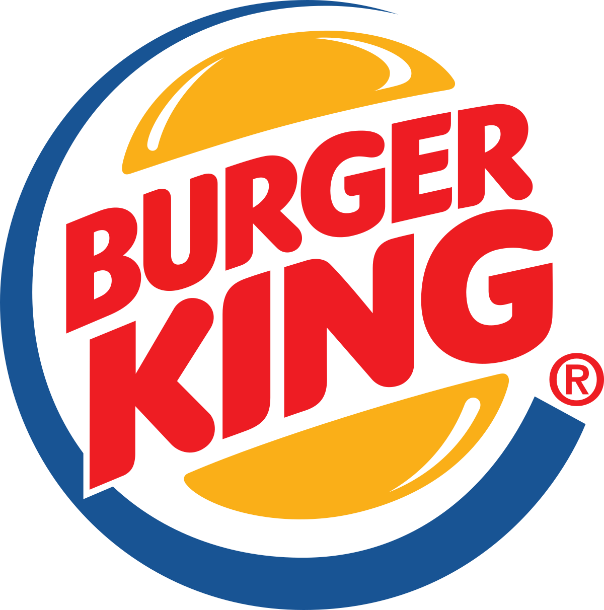
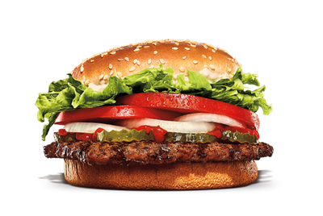
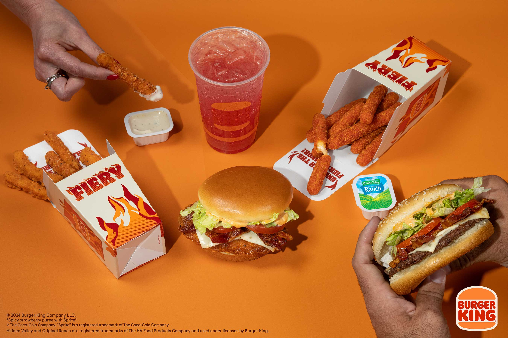

Burger King
Hoy les presento a esta cadena de restaurantes de comida rápida estadounidense especializada en la elaboración de hamburguesas que cuenta con variedad de hamburguesas con deliciosos sabores

Hamburguesas
Precio
¿Trae papas?
Whopper
Q50.25
Con papas y bebida
Double Whopper
Q58.76
Con papas y bebida
Bacon & Cheese Whopper
Q57.99
Con papas y bebida
Big King
Q49.47
Con papas y bebida
Original Chicken Sandwich
Q50.25
Con papas y bebida
Un poco de historia
Fue fundada el 4 de diciembre de 1954 en Miami, cuando dos jóvenes emprendedores llamados James McLamore y David R. Edgerton inauguraron este restaurante basado en un concepto diferente al que existía y que se ha mantenido hasta hoy: «The Home of The Whopper».
Producto Rey
En 1955, "el producto rey" fue incorporado como la imagen de la marca y ha perdurado como referencia: la Whopper, el producto principal de Burger King. 
Burger King fue una de las primeras cadenas de comida rápida en expandirse internacionalmente. Abrieron su primer restaurante fuera de los Estados Unidos en Puerto Rico en 1963, y en 1975 inauguraron su primera tienda en Europa, en Madrid, España.
El lema "Have It Your Way" (A tu manera) fue lanzado en 1974 y se convirtió en uno de los más exitosos en la historia de la publicidad. Permitió a los clientes personalizar sus hamburguesas
Desde su fundación, Burger King ha cambiado de propietario varias veces.
Carta/Menu

Seleccione su respuesta
Me gusta Burguer King
No me gusta Burguer King
Nunca he probado Burguer King